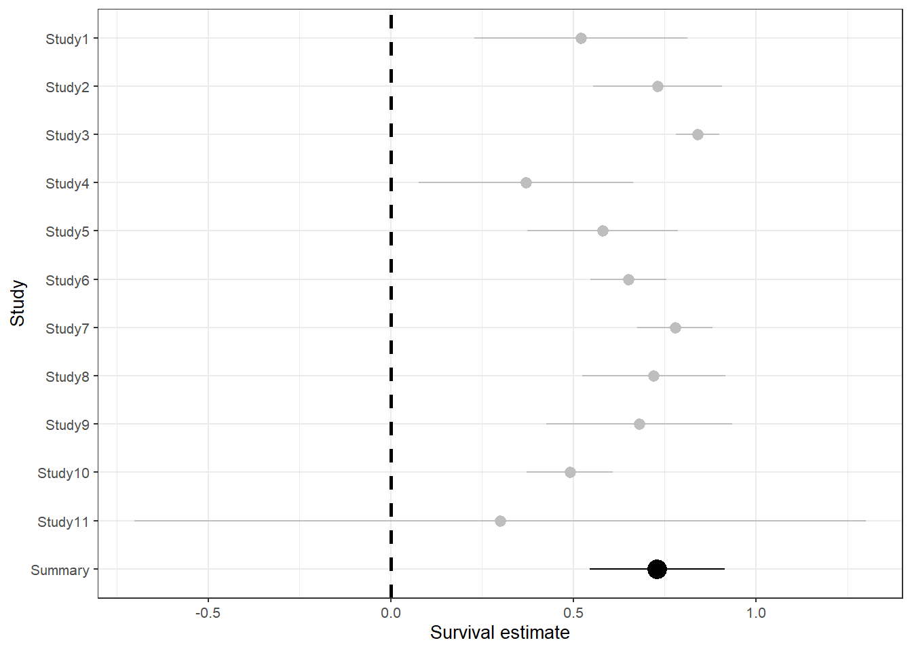

#load libraries
library(tidyverse, quietly = TRUE)
library(metafor, quietly = TRUE)
#load data
AnnualSurvival<-readRDS("data/AnnualSurvivalRate.RDS")
# Prepare the data
AnnualSurvival$var<-AnnualSurvival$SD^2Weighted regression of Annual Survival
Data
AnnualSurvival |>
mutate(N=Quality,
Mean_Survival=Avg,
Species=Sp.,
Harvested_population = `Harvest?`) |>
select(Species, Mean_Survival, SD, N, Harvested_population) |>
kableExtra::kable() |>
kableExtra::kable_styling()| Species | Mean_Survival | SD | N | Harvested_population |
|---|---|---|---|---|
| Wild Turkey | 0.520 | 0.149 | 327 | 1 |
| Wild Turkey | 0.730 | 0.090 | 40 | 1 |
| Wild Turkey | 0.840 | 0.030 | 98 | 1 |
| Wild Turkey | 0.370 | 0.150 | 53 | 1 |
| Wild Turkey | 0.580 | 0.105 | 54 | 1 |
| Wild Turkey | 0.650 | 0.053 | 185 | 1 |
| Wild Turkey | 0.778 | 0.053 | 3141 | 1 |
| Capercaillie | 0.720 | 0.100 | 67 | 0 |
| Capercaillie | 0.680 | 0.130 | 244 | 0 |
| Greater Sage-Grouse | 0.490 | 0.060 | 69 | 0 |
| Greater Sage-Grouse | 0.300 | 0.511 | 58 | 0 |
Weighted regression model
Survival estimates combined and weighted by sample size
# Weighted regression
mod1<-rma(Avg, var, weights = Quality, data=AnnualSurvival)theme_set(theme_bw(base_size=10))
forrest_data<-rbind(data.frame(ES=mod1$yi,SE=sqrt(mod1$vi),
Type="Study",
Study=c(paste0("Study", 1:11))),
data.frame(ES=mod1$b,SE=mod1$se,Type="Summary",Study="Summary"))
forrest_data$order=c(1:12)
plot1<-ggplot(data=forrest_data,aes(x=reorder(Study, -order),y=ES,ymax=ES+(1.96*SE),ymin=ES-(1.96*SE),size=factor(Type),colour=factor(Type)))+
geom_pointrange()
plot2<-plot1+
coord_flip()+
geom_hline(yintercept=0, lty=2,linewidth=1)+
scale_size_manual(values=c(0.5,1))
plot3<-plot2+
xlab("Study")+
ylab("Survival estimate")+
scale_colour_manual(values=c("grey","black"))
plot3+theme(legend.position="none")
Estimated Survival
From the weighted regression model we get an mean annual survival of 0.73 , with a lower estimate of 0.54 and an upper estimate of 0.91 .
Is there a difference with harvested and non-harvested populations?
mod2<-rma(Avg, var, weights = Quality, data=AnnualSurvival, subset= AnnualSurvival$`Harvest?`=="1")
mod3<-rma(Avg, var, weights = Quality, data=AnnualSurvival, subset= AnnualSurvival$`Harvest?`=="0")
dat.comp <- data.frame(estimate = c(coef(mod2), coef(mod3)), stderror = c(mod2$se, mod3$se),
meta = c("Harvest","No harvest"), tau2 = round(c(mod2$tau2, mod3$tau2),3))
(comp_mod<-rma(estimate, sei=stderror, mods = ~ meta, method="FE", data=dat.comp, digits=3))
Fixed-Effects with Moderators Model (k = 2)
I^2 (residual heterogeneity / unaccounted variability): 0.00%
H^2 (unaccounted variability / sampling variability): 1.00
R^2 (amount of heterogeneity accounted for): NA%
Test for Residual Heterogeneity:
QE(df = 0) = 0.000, p-val = 1.000
Test of Moderators (coefficient 2):
QM(df = 1) = 0.761, p-val = 0.383
Model Results:
estimate se zval pval ci.lb ci.ub
intrcpt 0.743 0.103 7.193 <.001 0.541 0.946 ***
metaNo harvest -0.137 0.157 -0.872 0.383 -0.445 0.171
---
Signif. codes: 0 '***' 0.001 '**' 0.01 '*' 0.05 '.' 0.1 ' ' 1